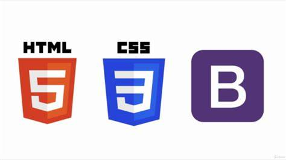

Bootstrap Diaries: A newbie exposed to Bootstrap
05 Oct 2023First dive into Bootstrap. 
When I first dived into Bootstrap 5, I must admit it felt a bit overwhelming. I was already comfortable with HTML and CSS, but Bootstrap seemed like a whole new beast to tame. However, as I started working with it, I began to appreciate its value. Bootstrap 5 is like a toolbox filled with pre-built components and styles, which can be a real time-saver. It’s great for HTML and CSS because it streamlines the process of creating responsive and visually appealing websites. Yet, its initial complexity can make it seem just as challenging as HTML and CSS when you’re getting started. However, with practice, I found that Bootstrap’s consistency and flexibility greatly outweighed the learning curve. It not only simplified my web development tasks but also helped ensure a polished and professional look to my projects, despite the initial process of learning and applying bootstrap. So, while it may seem tough at first, Bootstrap 5 has proven to be of great use.
Pure HTML & CSS or Bootstrap? 
I would choose Bootstrap over raw HTML and CSS for many web development projects. Bootstrap offers a well-structured framework with a wide range of pre-designed components, responsive grid systems, and CSS classes that simplify and expedite the development process. It helps ensure cross-browser compatibility and responsiveness without the need for extensive custom CSS code. This not only saves time but also promotes consistency and a polished design across various devices. Bootstrap’s extensive documentation and active community support make it an excellent choice, especially for developers looking to streamline their workflow and deliver high-quality, responsive websites efficiently. It seems as though if you spend as much time learning Bootstrap over just pure raw HTML and CSS, the investment would be worth double your time. That’s not something I could pass up!
Why Bootstrap may be my missing link in Software Engineering.
From my perspective, investing time in learning Bootstrap is like acquiring a superpower for long-term success in web development. It’s a valuable skill that enables me to build projects more rapidly. With its ready-made components and responsive design features, Bootstrap takes the complexity out of creating stylish and adaptable websites. Over time, this proficiency not only boosts my productivity but also ensures consistent and professional results. As I continue to hone my Bootstrap knowledge, I’m confident that I’ll be able to deliver projects faster, making it a smart and enduring investment in my career as a software engineer.